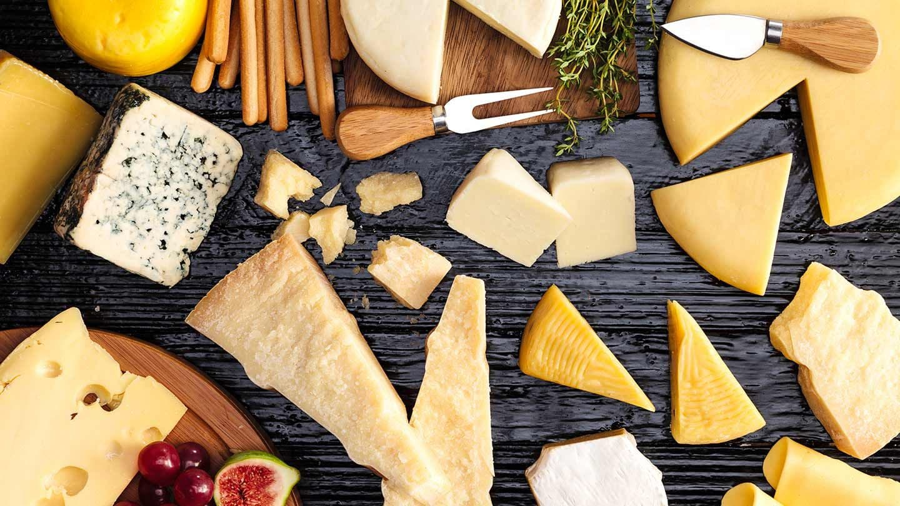

Що таке сир в Україні?
Для багатьох людей – це просто продукт, яким можна задовільнити банальну потребу «їсти». Зазвичай, в холодильнику пересічного українця можна побачити «жовтий сир» промислового виробництва, який, частіше, виконує «канапкову» функцію, або «сир для піци», або інгредієнт для салатів. Дуже рідко, коли сир є самостійною стравою, або ж ще рідше, головним інгредієнтом в страві. Чому так? Досліджуючи і вивчаючи культури споживання ремісничих (artisan) сирів Італії, Франції, Сполучених Штатів – по-доброму заздриш.. Коли говориш з представниками тих країн – мрієш, щоб було і в нас так, в нашій державі, з нашими людьми.
Хочеться мати продукт, яким пишаєшся, який має історію, який об’єднує націю, який елементарно настільки смачний, що ти готовий його шукати, чекати і розказувати про нього іншим… Ми обрали для себе такий продукт – це сир. Ми віримо, що в нас в Україні можливо створити якісні правдиві сири, з неймовірними ароматами й колоритами! Сири, про які з гордістю можна було сказати – це наш сир, український! Наша гордість! Звичайно, наш шлях не легкий. Маючи бажання виробляти й продавати правдиві сири маленькі сироварні, підприємці стикаються з низкою проблем.. Перша й головна: відсутність можливості отримати якісні теоретичні знання. Зазвичай, знання набуваються закордоном. А це чималі гроші й час. Друге й не менш складне питання: це поєднати любов до своєї справи з отриманими знаннями, і спробувати власними силами побудувати невеличке виробництво, яке, якщо пощастить, враховуючи особливість нашого законодавства, пройде сертифікацію в нашій державі. Ми віримо, що наша любов до справи подолає всі труднощі на нашому шляху.
НАША ІСТОРІЯ
Якщо Ви потрапили на цю сторінку, це означає, що Вам цікаво дізнатися про наш шлях розвитку…
А розпочалося все в 2014 році, коли двоє небайдужих до сиру і України людей, задалися питанням
«Чи є в нашій Україні
правдивий крафтовий сир? Чи є продукт, яким можна пишатися?».
Тоді, в кінці 2014 року, за спинами наших засновників був чималий досвід роботи у інших сферах.
Наші засновники,
молоді й натхненні, вирішили змінити щось у власному житті і у житті пересічного українця…
За спинами не було інвестиційних коштів, кредитів чи чималих фінансових збережень. Була ідея і
любов до сиру.